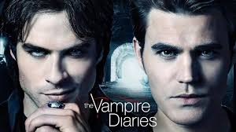
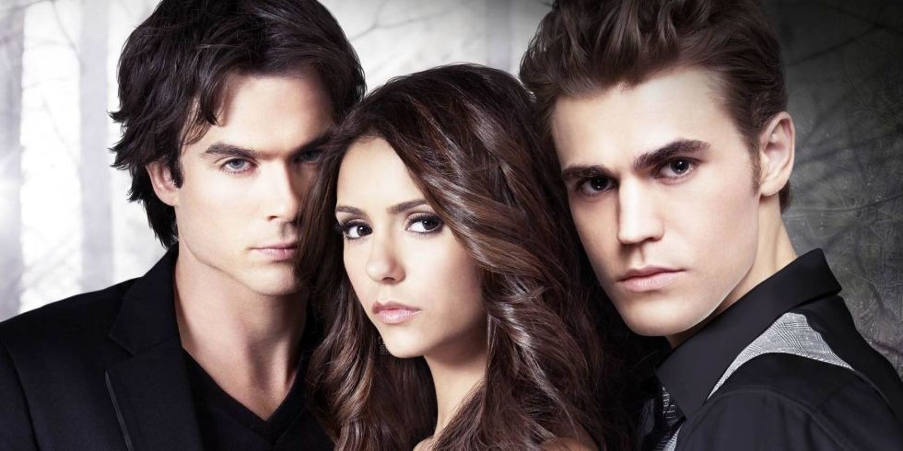

TEMPORADA 5: La serie fue renovada por una cuarta temporada el 4 de mayo de 2012, que se estrenó el 11 de octubre de 2012. Comienza con el conocimiento de que todo está en transición. Elena se enfrenta a su peor pesadilla cuando se despierta después del accidente y descubre que murió con la sangre de Damon en su sistema, que ahora deberá soportar la transición para convertirse en una terrible vampiresa – o enfrentarse a una muerte segura. Stefan y Damon se desgarran aún más por cómo ayudar a Elena, que se tiene que adaptar a una vida que ella nunca quiso, y todo el mundo tiene que hacer frente al caos, más una complicación surgida que deberán resolver por el bien de Elena, Damon y Stefan.La serie fue renovada por una cuarta temporada el 4 de mayo de 2012, que se estrenó el 11 de octubre de 2012. Comienza con el conocimiento de que todo está en transición. Elena se enfrenta a su peor pesadilla cuando se despierta después del accidente y descubre que murió con la sangre de Damon en su sistema, que ahora deberá soportar la transición para convertirse en una terrible vampiresa – o enfrentarse a una muerte segura.
TEMPORADA 6
| TEMPORADA 6 | |||||||||
|---|---|---|---|---|---|---|---|---|---|
|  | La serie fue renovada para una sexta temporada el 13 de febrero de 2014 y cuenta con el regreso de Alaric (Matthew Davis) y la promoción de Enzo (Michael Malarkey) como personajes principales. También marca la despedida de Nina Dobrev, Steven R. McQueen y Michael Trevino como miembros del elenco principal. Fue estrenada el 2 de octubre de 2014,8 y se centra principalmente en la lucha de Damon y Bonnie por volver a reunirse con sus amigos y seres amados. . | ||||||||
Desarrollo: El 6 de febrero de 2009, Variety anunció que The CW Television Network dio luz verde al piloto de la serie con Kevin Williamson y Julie Plec como escritores y productores ejecutivos. El 19 de mayo del mismo año, el piloto fue encargado oficialmente para la temporada 2009–2010. |
Casting: La elección del actor Steven R. McQueen (Jeremy Gilbert) fue anunciada el 28 de febrero de 2009, seguido de la elección de la actriz principal Nina Dobrev (Elena Gilbert y Katherine Pierce), el 8 de marzo. |
Críticas: The Vampire Diaries inicialmente recibió críticas mixtas y negativas. Entertainment Weekly le dio una A+, indicando que el show son «señales de un bienvenido retorno a la forma para el escritor y productor Kevin Williamson». Terminaron diciendo que «The vampire diaries nos promete una temporada de diversión con lengua afilada» |
The Vampire Diaries fue estrenada en el canal The CW el 10 de septiembre del año 2009 con su primera temporada,1 y el último episodio fue emitido el 10 de marzo de 2017 dándole fin a la octava y última temporada. |
||||||